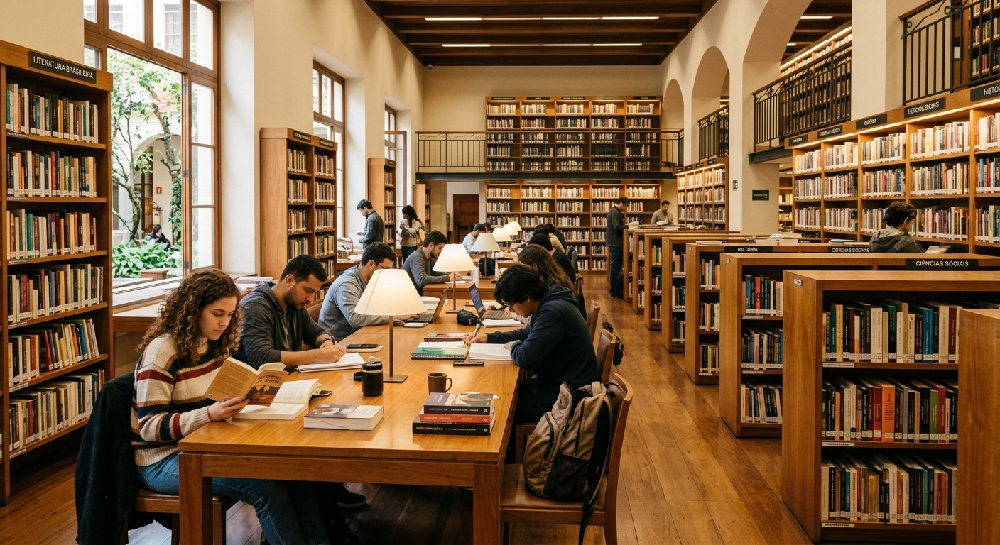
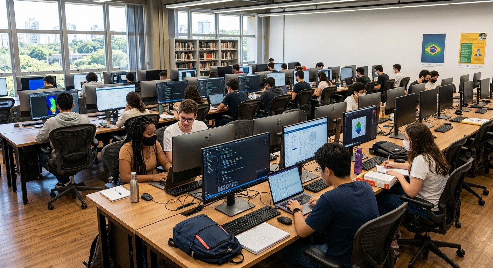
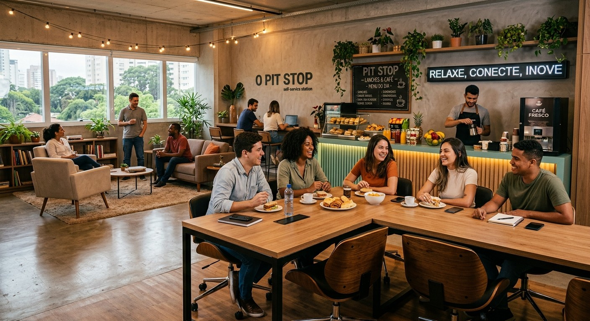

Biblioteca Central
Categoria: Estudo e Pesquisa
Localização: Prédio A - Térreo
Informação útil: Silêncio obrigatório nas áreas de leitura. Possui cabines e computadores de consulta.

Ver detalhes completos da Biblioteca
Consulte abaixo os locais, salas e serviços disponíveis para os estudantes.
Categoria: Estudo e Pesquisa
Localização: Prédio A - Térreo
Informação útil: Silêncio obrigatório nas áreas de leitura. Possui cabines e computadores de consulta.

Categoria: Tecnologia
Localização: Prédio B - 2º Andar
Informação útil: Computadores equipados com programas para programação e desenvolvimento de projetos.

Categoria: Alimentação e Convivência
Localização: Área Central - Pátio do Campus
Informação útil: Espaço para lanches rápidos, café e ponto de encontro no intervalo.
